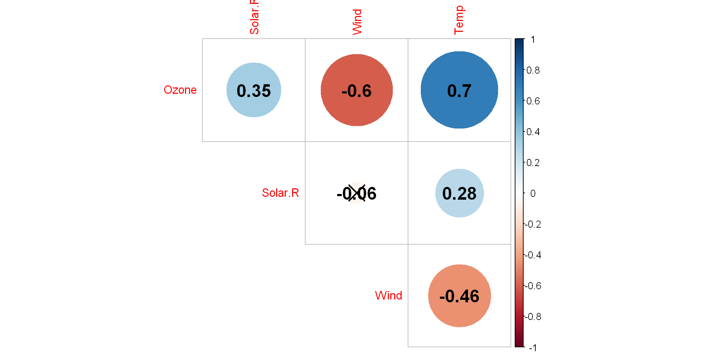

05. cor-test
R
상관분석
$H_ 0 : $ 변수간에는 상관관계가 없다( 상관계수 \(= 0\))
$H_1 : $ 변수간에는 상관관계가 있다.( 상관계수 \(\neq 0\) )
- 피어슨 상관계수
- 두 연속형 자료가 모두 정규성을 따른다는 가정하에 선형적 상관관계를 측정
- 스피어만 상관계수
- 데이터가 정규성을 만족하지 않거나 순위 및 순서 형태로 주어지는 경우 사용
- 피어슨 상관계수와 달리 비선형 관계의 연관성을 파악할 수 있다.
- 비모수적 방법
- 켄달의 순위상관계수
- \(X_i\)가 커짐에 따라 \(Y_i\)도 커질 경우 부합, 작아질 경우 비부합이라고 본다.
- 전체 데이터에서 비부합쌍에 대한 부합쌍의 비율로 상관계수를 산출한다.
- 순위상관계수가 -1 일 경우 비부합쌍의 비율이 100%, 0일 경우 두 변수 \(X,Y\)는 상관성이 없음을 의미한다.
\(\divideontimes\) 원래의 경우 독립이면 상관계수는 0이지만, 이것에 대한 역은 반드시 성립하지 않는다.
https://techntalk.tistory.com/entry/%ED%86%B5%EA%B3%84%EC%A0%81%EC%9C%BC%EB%A1%9C-%EB%91%90-%EB%B3%80%EC%88%98%EC%9D%98-%EB%8F%85%EB%A6%BDindependence%EA%B3%BC-%EC%83%81%EA%B4%80%EA%B3%84%EC%88%98correlation%EC%99%80%EC%9D%98-%EA%B4%80%EA%B3%84
R 실습
'data.frame': 153 obs. of 6 variables:
$ Ozone : int 41 36 12 18 NA 28 23 19 8 NA ...
$ Solar.R: int 190 118 149 313 NA NA 299 99 19 194 ...
$ Wind : num 7.4 8 12.6 11.5 14.3 14.9 8.6 13.8 20.1 8.6 ...
$ Temp : int 67 72 74 62 56 66 65 59 61 69 ...
$ Month : int 5 5 5 5 5 5 5 5 5 5 ...
$ Day : int 1 2 3 4 5 6 7 8 9 10 ...- use
- everything : 결측값 존재 시 NA출력
- all.obs : 결측값 존재 시 오류 메시지 출력
- complete.obs : 변수별로 결측값을 제외하고 상관계수 계산
- pairwise.complete.obs : 모든 변수 쌍에서 결측값이 없는 데이터들에 대해 상관계수 계산
options(repr.plot.res=200,repr.plot.height=5,repr.plot.width=10)
corrplot(air_cor,diag=F,type="upper",p.mat=testRes$p,
method="circle",number.cex=1.5,addCoef.col="black")
- 위 그래프를 해석하면
Wind와Solar.R간에는 상관관계가 없다고 해석할 수 있다.
Pearson's product-moment correlation
data: air$Wind and air$Solar.R
t = -0.6826, df = 144, p-value = 0.496
alternative hypothesis: true correlation is not equal to 0
95 percent confidence interval:
-0.2172359 0.1066406
sample estimates:
cor
-0.05679167